The main impact of oil at $200 a barrel on Australia would be a large drop in GDP of 1.53% by Q12. Equities peak at -4.04% in Q6.
Demand and trade. Consumption peaks at -0.97 % vs baseline in Q13, from -0.42 in Q1 to -0.81 in Q20. Investment peaks at -5.17 % vs baseline in Q5, from -2.42 in Q1 to -1.35 in Q20. Net Exports peaks at -1.35 % vs baseline in Q4, from -0.77 in Q1 to -0.89 in Q20. Gov Spending peaks at +0.23 % vs baseline in Q10, from +0.12 in Q1 to +0.16 in Q20. Gov Debt peaks at -0.96 % vs baseline in Q20, from -0.04 in Q1 to -0.96 in Q20.
External / FX. The real exchange rate shows real depreciation (a weaker, more competitive home currency). Currency Strength peaks at +5.55 % vs baseline in Q7, from +2.45 in Q1 to +3.95 in Q20.
Labour. Employment peaks at -1.71 % vs baseline in Q16, from -0.20 in Q1 to -1.59 in Q20. Unemployment peaks at +1.11 pp in Q16, from +0.12 in Q1 to +1.04 in Q20. Real Wages peaks at -1.31 % vs baseline in Q20, from -0.01 in Q1 to -1.31 in Q20.
Prices. The three-year CPI impulse is +1.95 percentage points. CPI Inflation peaks at +0.43 pp in Q2, from +0.33 in Q1 to -0.15 in Q20. Domestic Infl. peaks at +0.30 pp in Q2, from +0.23 in Q1 to -0.10 in Q20. Marginal Cost peaks at -0.90 % vs baseline in Q12, from -0.44 in Q1 to -0.70 in Q20.
Financial conditions. Policy Rate peaks at -1.21 pp (annualized) in Q20, from +0.26 in Q1 to -1.21 in Q20. Govt 2Y Yield peaks at -1.21 pp (annualized) in Q19, from +0.72 in Q1 to -1.21 in Q20. Govt 5Y Yield peaks at -1.06 pp (annualized) in Q16, from -0.04 in Q1 to -0.98 in Q20. Govt 10Y Yield peaks at -0.77 pp (annualized) in Q13, from -0.50 in Q1 to -0.67 in Q20. Bond Price peaks at +7.57 % vs baseline in Q20, from -1.62 in Q1 to +7.57 in Q20. Equity Index peaks at -4.04 % vs baseline in Q6, from -2.01 in Q1 to -2.09 in Q20. Tobin's Q peaks at -3.62 % vs baseline in Q5, from -1.69 in Q1 to -0.95 in Q20. House Prices peaks at -1.87 % vs baseline in Q20, from -0.08 in Q1 to -1.87 in Q20. Bank Credit peaks at -0.53 % vs baseline in Q18, from -0.04 in Q1 to -0.52 in Q20. Credit Spread peaks at +0.01 pp in Q18, from +0.00 in Q1 to +0.01 in Q20.
Sectoral and capital. Manuf. GDP peaks at -3.29 % vs baseline in Q5, from -1.73 in Q1 to -2.00 in Q20. Services GDP peaks at -1.09 % vs baseline in Q12, from -0.53 in Q1 to -0.84 in Q20. Capital Stock peaks at -0.37 % vs baseline in Q20, from -0.01 in Q1 to -0.37 in Q20.
Timing. By Q20 GDP is still -1.18% from baseline.
These figures are model IRFs versus baseline, not forecasts.
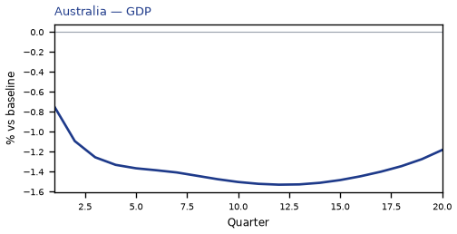
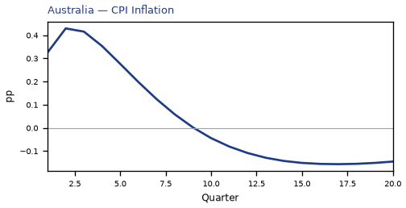
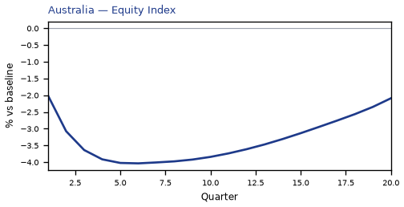
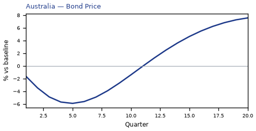
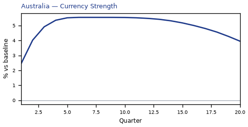
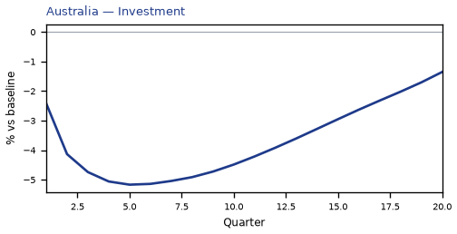
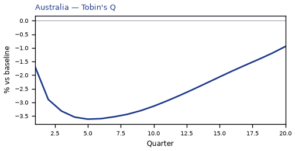
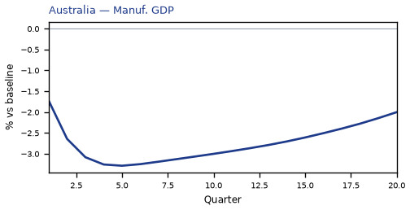
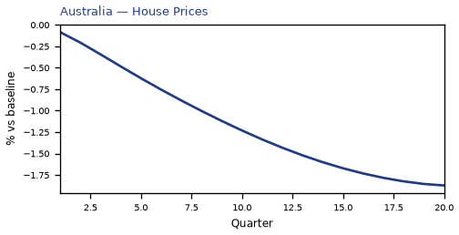
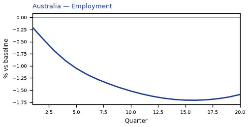
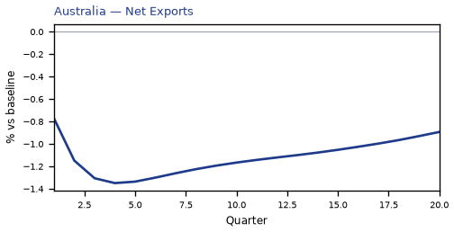
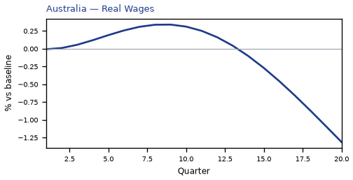
source=live · global_macro_v5 · contract v6 · Q1–Q20 JSON · not financial advice